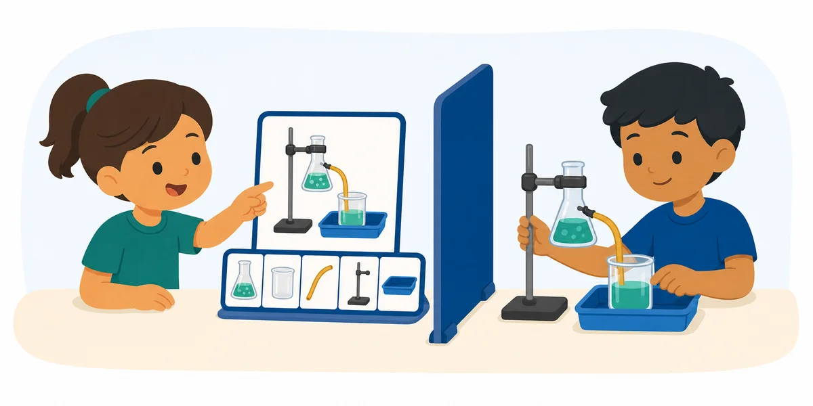

Activity 84 · Science
Experimental-Setup Build

Materials Safe classroom science equipment or picture cards.
What to describe
One student views a completed experimental setup and gives directions for assembling or diagramming it. ---
Roles
How a round works
Make it harder or easier
Harder
Use only precise science vocabulary; one-way delivery, no questions allowed.
Easier
Allow a labeled diagram and yes/no clarifying questions.
Reflect
Skills
Standards & alignment
TEKS 2021 Science TEKS · Strand 1: Scientific & Engineering Practices — communicating information & using models (confirm grade code)
NGSS NGSS SEP-8: Obtaining, Evaluating & Communicating Information · SEP-3: Planning & Carrying Out Investigations